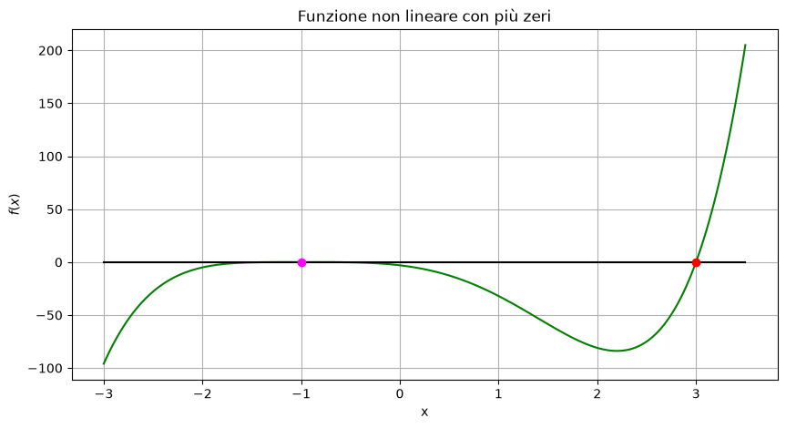

Esercizio 2) Caso con zeri multipli#
Definire la funzione \(f(x)=(x+1)^4 (x-3)\) e calcolarne la derivata. Poi:
calcolare (a mano) gli zeri \(x^*\) di \(f\) e determinarne la molteplicità;
plottare la funzione in \([-3, 3.5]\) e individuare graficamente gli zeri;
provare il metodo di bisezione settando \(a, b\) opportunamente;
provare il metodo Newton con \(x_0=-2\) e \(x_0=4\);
confrontare le soluzioni ottenute e analizzare se si trovano tutti gli zeri con ciascun metodo;
per il metodo di bisezione, analizzare la convergenza;
per il metodo di Newton, confrontare i rapporti fra gli errori \(e_k = |x^* - x_k|\) compiuti rispetto alle soluzioni esatte, stampando per ciascuna risoluzione
\[
\frac{e_{k+1}}{e_{k}} \qquad e \qquad \frac{e_{k+1}}{e_{k}^2}
\]
import numpy as np
import matplotlib.pyplot as plt
eps = np.finfo(float).eps
Definizione del problema#
def f(x):
return (x + 1)**4 * (x - 3)
x_star1 = 3
x_star2 = -1
Calcolo la derivata di \(f(x) = (x+1)^4(x-3)\), cioè
\[ f'(x) = 4(x+1)^3(x-3) + 1(x+1)^4 = ... = (x+1)^3(5x-11) .\]
def df(x):
return (x + 1)**3 * (5*x - 11)
Visualizzazione#
a = -3
b = 3.5
x = np.linspace(a, b, 200)
y = f(x)
yzeros = np.zeros_like(y)
plt.figure(figsize=(10, 5))
plt.plot(x,y, "-", color = 'green')
plt.plot(x,yzeros, "-", color = 'black')
plt.plot(x_star1, f(x_star1), 'o', color="red")
plt.plot(x_star2, f(x_star2), 'o', color="magenta")
plt.xlabel("x")
plt.ylabel(r"$f(x)$")
plt.title("Funzione non lineare con più zeri")
plt.grid(True)

Funzioni per la risoluzione iterativa#
def bisezione(f, a, b, tol=1e-12, max_iter=100):
fa = f(a)
fb = f(b)
iterati = []
# Controllo degli estremi
if fa * fb > 0:
raise ValueError("La funzione deve cambiare segno in [a, b].")
if fa == 0:
return a, 0, iterati
if fb == 0:
return b, 0, iterati
for k in range(1, max_iter + 1):
# Punto medio e valore della funzione
m = (a + b) / 2
fm = f(m)
# Memorizzo l'approssimazione corrente
iterati.append(m)
# Criterio di arresto
if abs(b - a) / 2 <= tol + eps * min(abs(a), abs(b)) or fm == 0:
print("Raggiunto il criterio di arresto.")
return m, k, iterati
# Seleziono il sottointervallo con cambio di segno, per la prossima iterazione
if fa * fm < 0:
b = m
else:
a = m
fa = fm
print("Raggiunto il numero massimo di iterazioni.")
return m, k, iterati
def newton(f, df, x0, tol_x=1e-12, tol_f=1e-14, max_iter=100):
x = x0 # x = float(x0)
iterati = [x]
print(f"k = 0, x = {x:.15f}, f(x) = {f(x):.3e}")
# Controllo del punto iniziale
if abs(f(x)) <= tol_f:
return x, 0, iterati
for k in range(1, max_iter + 1):
fx = f(x)
dfx = df(x)
# Controllo della derivata
if dfx == 0:
raise ValueError("Derivata nulla: impossibile proseguire.")
# Nuova approssimazione
x_nuovo = x - fx / dfx
print(f"k = {k:2d}, x = {x_nuovo:.15f}, f(x) = {f(x_nuovo):.3e}")
iterati.append(x_nuovo)
# Incremento e residuo
incremento = abs(x_nuovo - x)
residuo = abs(f(x_nuovo)) # sarebbe: abs(f(x_nuovo) - f(x_star)) = abs(f(x_nuovo) - 0)
# Criteri di arresto
if incremento <= tol_x+ eps * min(abs(x_nuovo), abs(x)) or residuo <= tol_f:
print("Raggiunto un criterio di arresto.")
return x_nuovo, k, iterati
# Aggiornamento per la prossima iterazione
x = x_nuovo
print("Raggiunto il numero massimo di iterazioni.")
return x, max_iter, iterati
Risoluzione coi due metodi#
print("METODO DI BISEZIONE")
a = -3
b = 3.5
x_bisez, n_iter_bisez, iterati_bisez = bisezione(f, a, b)
print("Zero approssimato:", x_bisez)
print("Numero di iterazioni:", n_iter_bisez)
METODO DI BISEZIONE
Raggiunto il criterio di arresto.
Zero approssimato: 3.0000000000006253
Numero di iterazioni: 43
print("METODO DI NEWTON - 1")
x0 = 4
x_newton1, n_iter_newton1, iterati_newton1 = newton(f, df, x0)
print("Zero approssimato:", x_newton1)
print("Numero di iterazioni:", n_iter_newton1)
METODO DI NEWTON - 1
k = 0, x = 4.000000000000000, f(x) = 6.250e+02
k = 1, x = 3.444444444444445, f(x) = 1.734e+02
k = 2, x = 3.126984126984127, f(x) = 3.684e+01
k = 3, x = 3.013916068710589, f(x) = 3.612e+00
k = 4, x = 3.000190345885334, f(x) = 4.874e-02
k = 5, x = 3.000000036222938, f(x) = 9.273e-06
k = 6, x = 3.000000000000001, f(x) = 3.411e-13
k = 7, x = 3.000000000000000, f(x) = 0.000e+00
Raggiunto un criterio di arresto.
Zero approssimato: 3.0
Numero di iterazioni: 7
print("METODO DI NEWTON - 2")
x0 = -2
# da finire
METODO DI NEWTON - 2
Confronto#
iterati_bisez = np.array(iterati_bisez)
iterati_newton1 = np.array(iterati_newton1)
# iterati_newton2 = np.array(iterati_newton2)
print(x_star1)
print(x_star2)
3
-1
print("BISEZIONE")
print("k \t errore \t intervallo")
print("---------------------------------------")
print( f"0 \t - \t \t {np.abs(b-a):.3e} " )
for k in range(1, n_iter_bisez+1):
errore_k = np.abs(x_star1 - iterati_bisez[k-1])
intervallo = np.abs(b-a)/(2**k)
print( f"{k} \t {errore_k:.3e} \t {intervallo:.3e} " )
BISEZIONE
k errore intervallo
---------------------------------------
0 - 6.500e+00
1 2.750e+00 3.250e+00
2 1.125e+00 1.625e+00
3 3.125e-01 8.125e-01
4 9.375e-02 4.062e-01
5 1.094e-01 2.031e-01
6 7.812e-03 1.016e-01
7 4.297e-02 5.078e-02
8 1.758e-02 2.539e-02
9 4.883e-03 1.270e-02
10 1.465e-03 6.348e-03
11 1.709e-03 3.174e-03
12 1.221e-04 1.587e-03
13 6.714e-04 7.935e-04
14 2.747e-04 3.967e-04
15 7.629e-05 1.984e-04
16 2.289e-05 9.918e-05
17 2.670e-05 4.959e-05
18 1.907e-06 2.480e-05
19 1.049e-05 1.240e-05
20 4.292e-06 6.199e-06
21 1.192e-06 3.099e-06
22 3.576e-07 1.550e-06
23 4.172e-07 7.749e-07
24 2.980e-08 3.874e-07
25 1.639e-07 1.937e-07
26 6.706e-08 9.686e-08
27 1.863e-08 4.843e-08
28 5.588e-09 2.421e-08
29 6.519e-09 1.211e-08
30 4.657e-10 6.054e-09
31 2.561e-09 3.027e-09
32 1.048e-09 1.513e-09
33 2.910e-10 7.567e-10
34 8.731e-11 3.783e-10
35 1.019e-10 1.892e-10
36 7.276e-12 9.459e-11
37 4.002e-11 4.729e-11
38 1.637e-11 2.365e-11
39 4.547e-12 1.182e-11
40 1.364e-12 5.912e-12
41 1.592e-12 2.956e-12
42 1.137e-13 1.478e-12
43 6.253e-13 7.390e-13
print("NEWTON")
print("k \t errore \t rapp lineare \t rapp quadratico")
print("----------------------------------------------------")
for k in range(0, n_iter_newton1):
errore_k = np.abs(x_star1 - iterati_newton1[k])
errore_kp1 = np.abs(x_star1 - iterati_newton1[k+1])
print( f"{k} \t {errore_k:.3e} \t {errore_kp1/errore_k:.3e} \t {errore_kp1/errore_k**2:.3e}" )
NEWTON
k errore rapp lineare rapp quadratico
----------------------------------------------------
0 1.000e+00 4.444e-01 4.444e-01
1 4.444e-01 2.857e-01 6.429e-01
2 1.270e-01 1.096e-01 8.630e-01
3 1.392e-02 1.368e-02 9.829e-01
4 1.903e-04 1.903e-04 9.998e-01
5 3.622e-08 3.678e-08 1.015e+00
6 1.332e-15 0.000e+00 0.000e+00
# da finire